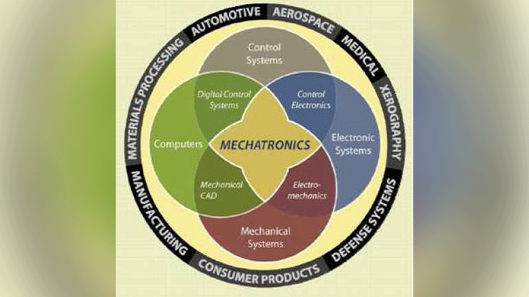

Mekatronika adalah kata baru yang lahir di Jepang pada awal tahun 1970-an yang merupakan gabungan antara 2 kata yaitu mechanics dan electronics. Sekarang kita sering melihat di sekeliling kita barang-barang mekatronik seperti robot, mesin bubut NC, kamera digital, printer dan lain sebagainya. Persamaan dar i barang-barang mekatronik ini adalah objek yang dikendalikan adalah gerakan mesin. Jika dibandingkan dengan gerakan mesin konvensional maka gerakan mesin tersebut lebih bersifat fleksibel dan lebih memiliki kecerdasan. Hal ini dimungkinkan karena memanfaatkan kemajuan iptek micro-electronics. Artinya dengan bantuan microelectronics mesin dapat bergerak dengan lebih cerdas. Jika seseorang memberikan sebuah perintah, lalu semua dapat dipasrahkan ke mesin yang dapat bergerak secara otomatis. Ini sangat membantu menciptakan mesin atau alat yang praktis dan mudah digunakan. Sehingga sumber daya pada manusia seperti waktu dan otak dapat dipakai untuk pekerjaan yang lain, sehingga dapat menciptakan nilai tambah.
Pada awalnya mekatronik diarahkan pada 3 target yaitu: penghematan energi (energy saving), pengecilan dimensi dan peringanan berat, dan peningkatan kehandalahan (reliability). Sekarang, setelah 30 tahun lebih berlalu dari kelahirannya, perlu dirumuskan kembali arah mekatronik sesuai dengan perkembangan jaman. Dan khususnya untuk Indonesia sebagai negara yang masih berkembang dengan segudang permasalahannya, rasanya arah mekatronik perlu ditentukan agar dapat membantu memecahkan masalah-masalah yang ada dengan tetap memperhatikan lingkungan regional dan global.
Mekatronik adalah teknologi atau rekayasa yang menggabungkan teknologi tentang mesin elektronika, dan informatika untuk merancang, memproduksi, mengoperasikan danmemelihara sistem untuk mencapai tujuan yang diamanatkan. Seperti dikitahui dari definisi, mekatronika adalah gabungan disiplin teknik mesin, teknik elektro, teknik informatika, danteknik kendali. Pada awalnya, secara khusus tidak ada disiplin mekatronika. Untukmenggabungkan beberapa disiplin iptek tersebut, mekatronika memer lukan teori kendali dan teori sistem.
Secara sempit pengertian mekatronika mengarah pada teknologi kendali numerik yaituteknologi mengendalikan mekanisme menggunakan aktuator untuk mencapai tujuantertentu dengan memonitor informasi kondisi gerak mesin menggunakan sensor, dan memasukkan informasi tersebut ke dalam mikro-prosesor. Ini menyumbangkan kemajuan yang spektakuler jika dibandingkan dengan kontrol otomatis menggunakan instrument analog, karena dapat merubah skenario kontrol secara fleksibel dan dapat memiliki fungsi pengambilan keputusan tingkat tinggi. Contoh klasik barang mekatronik adalah lengan robot dan mesin bubut control numerik. Barang-barang ini dapat melakukan pekerjaan-pekerjaan yang berbeda-beda dengan cara merubah program mereka sesuai kondisi yang diminta, karena telah ditambahkan kemampuan kendali aktif yang canggih terhadap mekanisme yang telah ada. Beberapa manfaat penerapan mekatronik adalah sebagai ber ikut :
Manfaat terbesar yang dapat diperoleh dari penerapan mekatronik adalah meningkatkan fleksibilitas mesin dengan menambahkan fungsifungsi baru yang mayoritas merupakan kontribusi mikro-prosesor. Sebagai contoh, lengan robot industri dapat melakukan berbagai jenis pekerjaan dengan merubah program peranti lunak di mikro-prosesornya seperti halnya lengan manusia. Ini yang menjadi faktor utama dimungkinkannya proses produksi produk yang beraneka ragam tipenya dengan jumlah yang sedikit-sedikit.
Pada mesin-mesin konvensional (manual) muncul berbagai masalah yang diakibatkan oleh berbagai jenis gesekan pada mekanisme yang digunakan seperti: keusangan, masalah sentuhan, getaran dan kebisingan. Pada penggunaan mesin- mesin tersebut diperlukan sarana dan operator yang jumlahnya banyak untuk mencegah timbulnya masalah-masalah tersebut. Dengan menerapkan switch semikonduktor misalnya, maka masalah-masalah akibat sentuhan tersebut dapat diminimalkan sehingga meningkatkan kehandalan. Selain itu, dengan menggunakan komponen-komponen elektronika untuk mengendalikan gerakan, maka komponen-komponen mesin pengendali gerak bisa dikurangi sehingga meningkatkan kehandalan.
Pada mesin-mesin konvensional (manual) yang sebagian besar menggunakan komponen-komponen mesin sebagai pengendali gerak, tingkat presisi dan kecepatan telah mencapai gar is saturasi yang sulit untuk diangkat lagi. Dengan menerapkan kendali digital dan teknologi elektronika, maka tingkat presisi mesin dan kecepatan gerak mesin dapat diangkat lebih tinggi lagi sampai batas tertentu. Batas ini misalnya adalah r igiditas mesin yang menghalangi kecepatan lebih tinggi karena munculnya getaran. Hal ini melahirkan tantangan baru yaitu menciptakan sistem mesin yang memiliki r igiditas lebih tinggi.
Struktur mekatronik dapat dipilah menjadi 2 buah dunia yaitu dunia mekanika dan dunia elektronika. Di dunia mekanika terdapat mekanisme mesin sebagai objek yang dikendalikan. Di dunia elektronika terdapat beberapa elemen mekatronika yaitu: sensor, kontroler, rangkaian penggerak, aktuator dan sumber energi. Elemen-elemen mekatronik dapat dijelaskan sebagai berikut :
Struktur mekatronik yang digambarkan di sini dari segi teori kendali disebut sistem umpan balik (closed loop). Sistem umpan balik ini menyerupai makhluk hidup, dimana dalam melakukan kegiatan selalu merevisi tindakannya berdasarkan informasi umpan balik yang dikirim oleh indra ke otak. Dengan demikian mekatronik adalah merealisasikan system mekanik yang mampu melakukan pekerjaan seperti halnya seorang manusia yang memiliki kondisi yang sempurna.